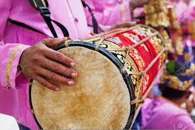

Indonesia, un país del Sudeste Asiático compuesto de miles de islas, es hogar de cientos de grupos étnicos que hablan varios idiomas distintos. Es conocido por sus playas, volcanes,y selvas que albergan elefantes, orangutanes y tigres.Su vibrante y creciente capital de Indonesia, Yakarta, y la ciudad de Yogyakarta, conocida por la música de gamelán y su arte tradicional de las marionetas.
Es el decimocuarto país más grande por área, con 1,904,569 kilómetros cuadrados. Con alrededor de 280 millones de personas, Indonesia es el cuarto país más poblado del mundo
La cultura de indonesia es el resultado de la mezcla de diferentes civilizaciones. Siendo hoy en día un país islámico, las creencias autóctonas, el hinduismo y el budismo de la India ejercieron una profunda influencia y han dejado una importante huella en la arquitectura y escultura del país. Esta manifiesta una variedad de sus costumbres, creencias y tradiciones, que varían dramáticamente no solo entre las islas sino también dentro de ellas. Esta diversidad es el resultado directo del encuentro milenario entre culturas autóctonas y múltiples.
Indonesia es el país con la mayor población musulmana del mundo, con más de 240 millones de fieles que representan alrededor del 86% de la población.
También hay presencia de otras religiones como el cristianismo y el hinduismo, todas influenciadas de alguna manera u otra por las creencias tradicionales. Esta diversidad religiosa se refleja en la cultura indonesia, que es una mezcla de influencias de diferentes civilizaciones y religiones.
La música y la danza son una parte integral de la cultura indonesia, con una gran variedad de estilos y tradiciones que reflejan la diversidad del país. Desde la música tradicional de gamelan hasta las danzas folclóricas de Bali, la música y la danza indonesias son una expresión viva de la historia y la identidad cultural del país. Algunos de los estilos musicales más conocidos de Indonesia incluyen:
Gamelan: Un conjunto musical tradicional de las islas de Java, Bali y Sunda que consiste en una variedad de instrumentos de percusión, como gongs, xilófonos y tambores. Ver un orquesta de gamelán en vivo es una experiencia cultural muy interesante.
Keroncong: Un estilo musical que combina influencias portuguesas, holandesas e indonesias, y se caracteriza por su uso de instrumentos de cuerda y su estilo vocal suave y melódico.

Dangdut: Un género musical popular que combina elementos de la música india, árabe y malaya, y se caracteriza por su ritmo bailable

Indonesia tiene una gran variedad de instrumentos musicales tradicionales. Algunos de los instrumentos más conocidos incluyen:
Angklung: Un instrumento de bambú que consiste en varios tubos de diferentes tamaños que se sacuden para producir sonidos.
Sasando: Un instrumento de cuerda similar a una cítara, originario de la isla de Rote en Indonesia oriental.
Suling: Flauta de bambú utilizada en toda Indonesia, con diferentes variaciones regionales.
Kendang:Tambor de dos caras utilizado en el gamelán y otros estilos de música indonesios. Es esencial en la música tradicional y folclórica del país.
Desde el refinado y elegante estilo de la danza javanesa hasta la enérgica y dramática danza balinesa, cada región y grupo étnico tiene su propio repertorio de danzas únicas.
La danza gamelán, acompañada por la música del mismo nombre, es emblemática de Java y Bali, mientras que otras regiones tienen sus propias formas de expresión artística, como el Samat en Aceh (isla de Sumatra), en la que los bailarines realizan movimientos rápidos y sincronizados mientras están sentados en el suelo; o el Tari Merak en Java Occidental, que es una representación grácil que imita los movimientos elegantes y la belleza del pavo real.
Además, las danzas de Indonesia incorporan gestos, movimientos y vestimenta tradicionales que transmiten valores, creencias y la identidad cultural de cada comunidad. Estas danzas no solo entretienen, sino que también preservan y transmiten la rica herencia cultural de Indonesia de generación en generación.
El arte y las artesanías tradicionales de Indonesia son expresiones vibrantes de la identidad cultural del país, transmitiendo su historia, creencias y valores a través de formas artísticas variadas y excepcionales.
Entre las formas más destacadas se encuentra el wayang, un arte tradicional de teatro de sombras originario de Java y Bali. Utilizando figuras recortadas de cuero o cartón, los artistas dan vida a historias épicas del Ramayana y el Mahabharata, así como relatos locales y mitológicos.
Además del wayang, Indonesia es conocida por su artesanía en madera tallada, como esculturas detalladas y muebles intrincados, que exhiben habilidades artesanales excepcionales. La cestería también es prominente, con cestas y objetos tejidos a mano que muestran diseños elaborados y técnicas tradicionales
El ikat es una técnica de teñido y tejido tradicionalmente practicada en diversas regiones de Indonesia, como Flores, Sumba y Timor. En el proceso de ikat, los hilos se atan y se tiñen antes de tejerse, creando patrones y diseños intrincados que son característicos de cada comunidad y grupo étnico. Las telas ikat son apreciadas por su belleza visual y su significado cultural, ya que a menudo se utilizan en ceremonias religiosas, rituales
Otras formas de arte incluyen la pintura batik, una técnica de teñido de telas que crea patrones y diseños coloridos y únicos, y la talla en piedra, que se utiliza para crear estatuas religiosas y decorativas, algo que alcanza su máxima expresión en Bali.
La gastronomía de Indonesia combina una amplia variedad de sabores intensos y exóticos, reflejando influencias de la cocina china, india, árabe y europea.
Los ingredientes frescos y las especias son fundamentales en la preparación de los platos indonesios, que van desde currys fragantes hasta platos a base de arroz y fideos.
Estos son algunos de los platos más representativos:
Nasi Goreng: Arroz salteado con vegetales, huevo, y a menudo con pollo, camarones o carne.
Rendang: Un guisado/curry de carne vacuna cocinado lentamente en leche de coco y una mezcla de especias que incluye galanga, limoncillo y hojas de lima kaffir.
Satay (Sate): Brochetas de carne marinada, como pollo, cordero o ternera, asadas a la parrilla y servidas con una salsa de cacahuate.
Soto: Sopa aromática hecha con caldo de pollo o carne, con fideos, verduras y a menudo se sirve con huevo duro y chiles picados.
Gado-Gado:Ensalada que combina verduras crudas y cocidas al vapor, como pepino, col y brotes de soja, más tofu y tempeh, y cubierta con una cremosa salsa de cacahuate
Murtabak: Un panqueque grueso con distintos rellenos, tanto dulces como salados. Entre las variedades saladas el más popular es hecho con carne picada o pollo, cebolla, huevo y especias. Y entre los dulces, de cacahuate con chocolate o de queso y chocolate